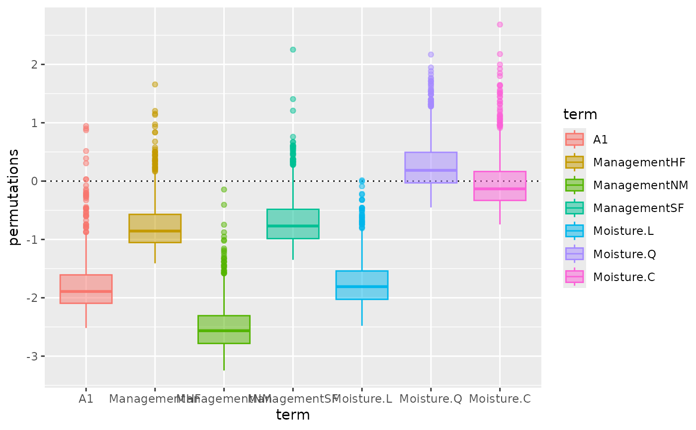

Autoplot Graphics for vegan permustats Objects
autoplot.permustats.RdAlternatives for lattice graphics functions
vegan::densityplot.permustats(),
vegan::densityplot.permustats() and
vegan::boxplot.permustats().
Arguments
- object
object from
vegan::permustats().- plot
character; the type of plot, or a geom from ggplot2.
- scale
logical; use standardized effect sizes (SES)?
- facet
logical; should the plot be faceted by
term?- gg.params
list; arguments passed to function drawing the box-like object. Depending on argument
plotthe parameters are passed toggplot2::geom_boxplot(),ggplot2::geom_violin(),ggplot2::geom_density()orggplot2::geom_qq().- ...
Other parameters passed to functions (ignored).
Value
Returns a ggplot object.
Details
Function fortify() returns a data frame with variables permutations
(numeric) and term (factor labelling the permutation). The result of
fortify() can be used to custom build diagnostic plots. autoplot()
provides basic plots of vegan::permustats() objects with limited
flexibility.
Examples
library("vegan")
data(dune, dune.env)
mod <- cca(dune ~ A1 + Management + Moisture, dune.env)
(ano <- anova(mod, by = "onedf"))
#> Permutation test for cca under reduced model
#> Sequential test for contrasts
#> Permutation: free
#> Number of permutations: 999
#>
#> Model: cca(formula = dune ~ A1 + Management + Moisture, data = dune.env)
#> Df ChiSquare F Pr(>F)
#> A1 1 0.22476 2.7632 0.009 **
#> ManagementHF 1 0.13890 1.7076 0.054 .
#> ManagementNM 1 0.28099 3.4545 0.001 ***
#> ManagementSF 1 0.13512 1.6612 0.077 .
#> Moisture.L 1 0.21976 2.7017 0.002 **
#> Moisture.Q 1 0.05769 0.7093 0.722
#> Moisture.C 1 0.08193 1.0073 0.358
#> Residual 12 0.97610
#> ---
#> Signif. codes: 0 ‘***’ 0.001 ‘**’ 0.01 ‘*’ 0.05 ‘.’ 0.1 ‘ ’ 1
pstat <- permustats(ano)
head(fortify(pstat))
#> # A tibble: 6 × 2
#> term permutation
#> <fct> <dbl>
#> 1 A1 -2.10
#> 2 A1 -2.06
#> 3 A1 -2.21
#> 4 A1 -2.00
#> 5 A1 -2.06
#> 6 A1 -1.74
autoplot(pstat, "box")

if (requireNamespace("ggplot2")) {
library("ggplot2")
# avoid overplotting x-axis text
autoplot(pstat, "violin") +
scale_x_discrete(guide = guide_axis(n.dodge = 2))
autoplot(pstat, "qqnorm", facet = TRUE) +
geom_qq_line()
}
 autoplot(pstat, "density", facet = TRUE)
autoplot(pstat, "density", facet = TRUE)